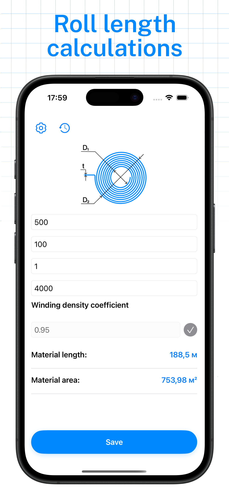
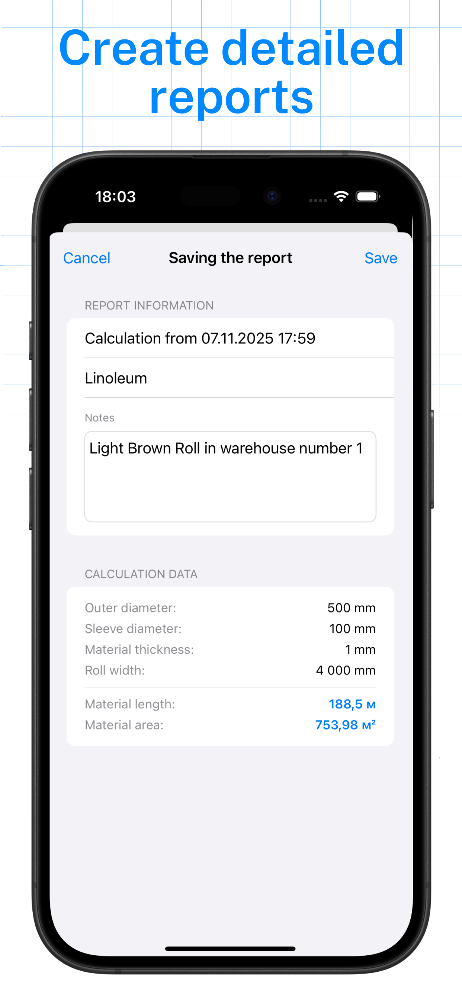
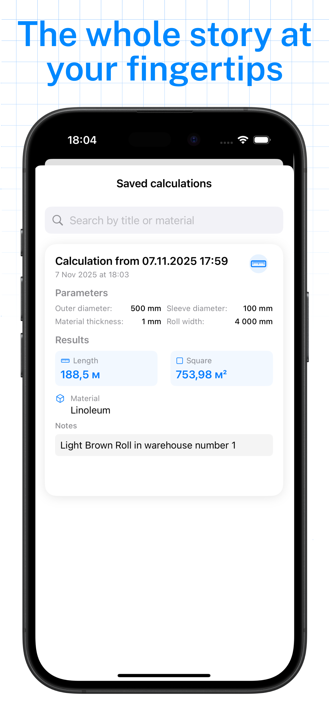

Built for On-Site Technical Operations



Three-Step Instant Geometry Calculations
Input Core Dimensions
Enter the outer diameter, inner core core specs, and material thickness.
Execute Formulas
The app applies precise architectural spiral roll calculations automatically.
Get Weight & Length
Instantly evaluate run lengths or roll weight stats on the spot.
No Fluff. Just Precise Engineering Math.
Diameter to Length
Determine exactly how many linear meters or feet remain on a partially used core spool without unwinding or manual scaling attempts.
Mass & Density Scaling
Incorporate density values for plastics, paperboards, steel foils, and laminates to accurately evaluate shipment weights and logistics metrics.
Quick-Save Templates
Store your frequent material specifications (like 50-micron poly film or 120gsm paper stock cores) to recall presets with a single tap.
Zero Network Dependancy. Operational Anywhere.
Production environments can have terrible reception. Roll Length Calc operates fully locally, requiring no login or background tracking processes.
Trusted on the Factory Floor
"Saves me ten minutes on every stock check query. The spiral calculus math matches our mechanical measurement sensors perfectly."
"Brilliant utility layout for inventory operators. No ads, simple UI dials, and works deep inside our concrete structural storage complexes."
Frequently Asked Questions
How does the application calculate precise material length?
The calculation engine leverages standard engineering spiral thickness models, processing outer diameter, internal core support radius, and item layer thickness gauges to derive length values.
Does the calculator support both Metric and Imperial configurations?
Yes. You can switch fluidly between millimeters, meters, and kilograms, or inches, feet, and pounds depending on your local factory tracking conventions.
Can I estimate the weight of a roll if I only know its material type?
If you have the material's structural density metric or overall thickness gauges, the algorithm can approximate total package weight dimensions seamlessly.
Streamline Your Inventory Verification Tasks
Download Roll Length Calc for iOS and get precise estimates instantly.